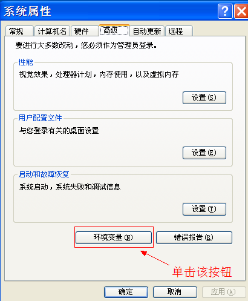

在以后的操作中我们会经常用到这个命令行工具。所以，大家最好能记住一些常用命令。
<app>
<name>留言本</name>
<description>Pluggable Authentication Modules</description>
<author>
<name>shopex开发团队</name>
<email>dev@shopex.cn</email>
<url>http://www.shopex.cn</url>
</author>
<version>0.1</version>
<license>shopex license</license>
<depends>
<app>base</app>
</depends>
</app>
现在notebook下的目录结构是这样的：
| 路径 | 说明 |
|---|---|
| app | 所有App放置目录 |
| app/base/... | 应用base所在目录 |
| app/notebook | 应用notebook所在目录 |
| config/config.php | 主配置文件 |
| config/mapper.php | URL映射配置文件 |
| data | 数据文件夹 |
| index.php | php入口文件 |
app/notebook下的内容如下：
| 路径 | 说明 |
|---|---|
| app/notebook/model | 模型目录 |
| app/notebook/view | 视图目录 |
| app/notebook/controller | 控制器目录 |
| app/notebook/dbschema | 数据库表结构定义 |
| app/notebook/lang | 语言包文件夹 |
| app/notebook/lib | php类库文件 |
每个应用都是一个独立完整的MVC结构（../advance/part/mvc.html）。并且可以有自己的数据表，语言包。安装项目实际上就是安装对应的app。 现在我们的应用安装好，下一步进行功能实现。
notebook > app/base/cmd install notebook 1. 数据库主机 localhost 2. 数据库用户名 root 3. 数据库密码 (empty) 4. 数据库名 5. 数据库表前缀 sdb_ 6. 默认时区 (北京时间) 北京、重庆、香港、新加坡 ________________________________________ 输入项目编号,或输入井号"#"确认:
输入项目编号,或输入井号"#"确认: 4 选择合适的数据库名: 1. information_schema 2. mysql 3. notebook 输入合适的数据库名编号:
1. 数据库主机 localhost 2. 数据库用户名 root 3. 数据库密码 (empty) 4. 数据库名 notebook 5. 数据库表前缀 sdb_ 6. 默认时区 (北京时间) 北京、重庆、香港、新加坡 ________________________________________ 输入项目编号,或输入井号"#"确认: #
Using sample :/Users/wanglei/Sites/notebook/app/base/examples/config.php Writing config file... ok. Writing config compat... ok. Creating table sdb_base_app_content Creating table sdb_base_apps Creating table sdb_base_cache_expires Creating table sdb_base_files Creating table sdb_base_kvstore Creating table sdb_base_network Creating table sdb_base_queue Creating table sdb_base_rpcnotify Creating table sdb_base_rpcpoll Creating table sdb_base_task Installing service file_storage Installing service view_compile_helper Installing service view_helper Installing service html_input ... ... Scanning local Applications... ok. Application libaray is updated, ok. Application base installed... ok. notebook "zh-cn" language resource stored Application notebook installed... ok.
至此，新项目notebook已经创建并安装完成。
缓存已经成为评价一个框架优劣的重要评审标准之一, 它可以提供系统速度, 但在开发过程中. 缓存会令人感到头痛, 因此在我们开始我们的项目前, 先把缓存关掉
修改ecos系统配置文件 config/config.php将:
define('WITHOUT_CACHE',false);
替换为:
define('WITHOUT_CACHE',true);